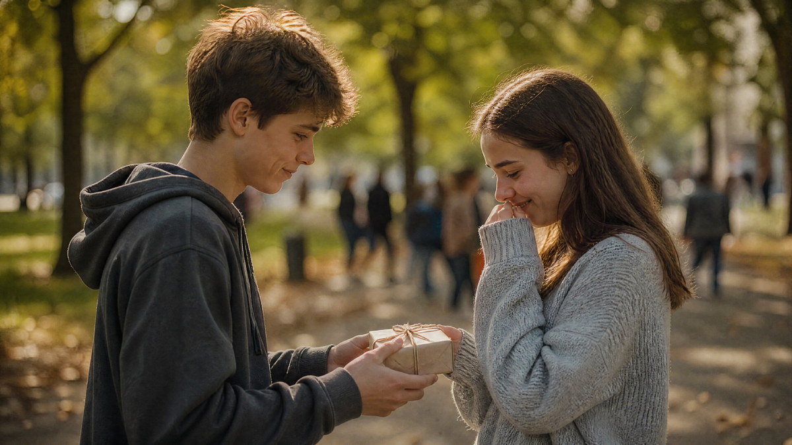
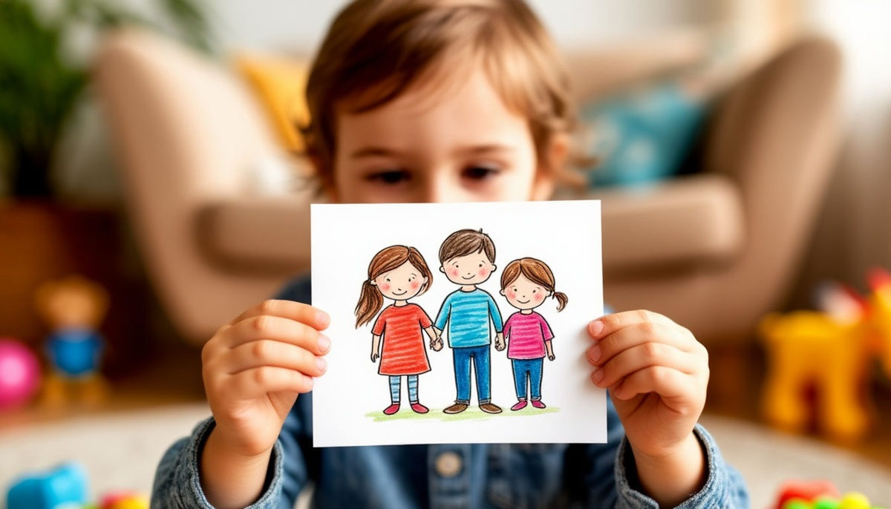
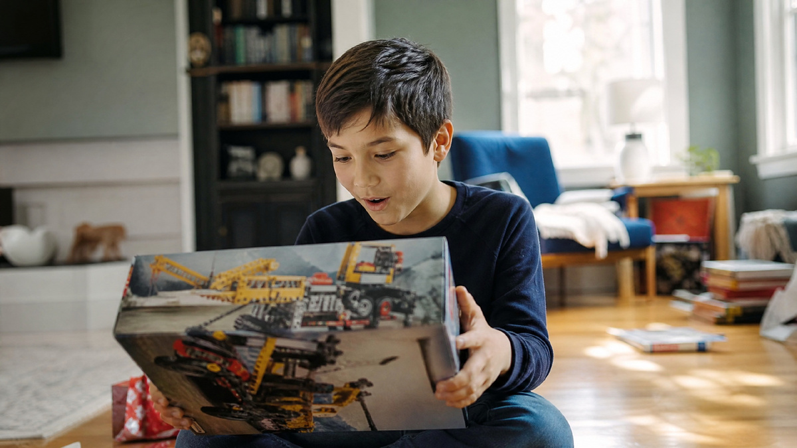

ДетиПодросток и подарок: что выбрать парню или девушке
Первые отношения — это всегда сложно. А первые подарки в этих отношениях — сложно вдвойне. Денег нет, опыта нет, а страха — хоть отбавляй.
Анна Светлова
Игрушки и впечатления, которые развивают и остаются в памяти.
6 материалов · обновляется каждую неделю

ДетиПервые отношения — это всегда сложно. А первые подарки в этих отношениях — сложно вдвойне. Денег нет, опыта нет, а страха — хоть отбавляй.

ДетиУ детей особая связь с подарками. Взрослый может подарить дорогую вещь и забыть о ней через неделю.

ДетиДесять лет — переломный возраст. Вчерашний малыш, который радовался любой машинке, вдруг начинает смотреть на подарок с прищуром.
У бабушки есть одна особенность. Она всегда говорит «не надо». И всегда радуется любому подарку. Даже носкам. Даже открытке.
У подростка две проблемы с подарком маме. Первая — денег нет. Вторая — сказать хочется, а слов подходящих тоже нет.
Моей племяннице исполнилось пять. Я подарил ей огромную мягкую игрушку — медведя размером с неё саму.
Подпишитесь на RSS-ленту — все статьи в одном потоке.